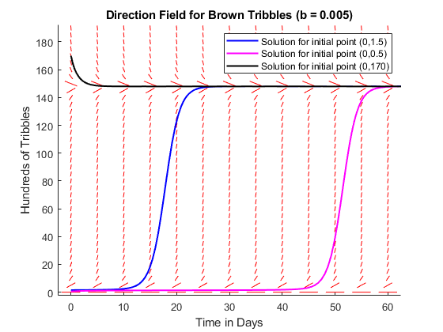
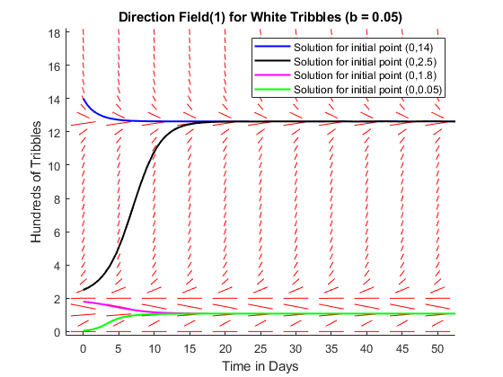
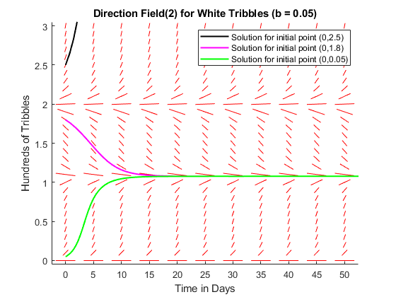
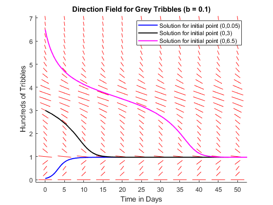

figure(1);
hold on;
f = @(t,y) (0.75*y) - (0.005*y^2) - ((1.5*y^3)/(y^3 + 1.25));
dirfield (f,0:5:60,0:5:190, 'Direction Field for Brown Tribbles (b = 0.005)');
tspan = [0,75];
[t,y] = ode45(f,tspan,1.5);
plot(t,y,'blue',LineWidth=1.5);
[t,y] = ode45(f,tspan,0.5);
plot(t,y,'magenta',LineWidth=1.5);
[t,y] = ode45(f,tspan,170);
plot(t,y,'black',LineWidth=1.5);
legend('','','Solution for initial point (0,1.5)','Solution for initial point (0,0.5)','Solution for initial point (0,170)')
figure(2);
hold on;
g = @(t,y) (0.75*y) - (0.05*y^2) - ((1.5*y^3)/(y^3 + 1.25));
dirfield (g,0:5:50,0:0.5:18, 'Direction Field(1) for White Tribbles (b = 0.05)');
[t,y] = ode45(g,tspan,14);
plot(t,y,'blue',LineWidth=1.5);
[t,y] = ode45(g,tspan,2.5);
plot(t,y,'black',LineWidth=1.5);
[t,y] = ode45(g,tspan,1.8);
plot(t,y,'magenta',LineWidth=1.5);
[t,y] = ode45(g,tspan,0.05);
plot(t,y,'green',LineWidth=1.5);
legend('','','Solution for initial point (0,14)', ...
'Solution for initial point (0,2.5)', ...
'Solution for initial point (0,1.8)', ...
'Solution for initial point (0,0.05)')
figure(3);
hold on;
dirfield (g,0:5:50,0:0.1:3, ...
'Direction Field(2) for White Tribbles (b = 0.05)');
[t,y] = ode45(g,tspan,2.5);
plot(t,y,'black',LineWidth=1.5);
[t,y] = ode45(g,tspan,1.8);
plot(t,y,'magenta',LineWidth=1.5);
[t,y] = ode45(g,tspan,0.05);
plot(t,y,'green',LineWidth=1.5);
legend('','','Solution for initial point (0,2.5)', ...
'Solution for initial point (0,1.8)', ...
'Solution for initial point (0,0.05)')
figure(4);
hold on;
h = @(t,y) (0.75*y) - (0.1*y^2) - ((1.5*y^3)/(y^3 + 1.25));
dirfield (h,0:5:50,0:0.25:7, ...
'Direction Field for Grey Tribbles (b = 0.1)');
[t,y] = ode45(h,tspan,0.05);
plot(t,y,'blue',LineWidth=1.5);
[t,y] = ode45(h,tspan,3);
plot(t,y,'black',LineWidth=1.5);
[t,y] = ode45(h,tspan,6.5);
plot(t,y,'magenta',LineWidth=1.5);
legend('','','Solution for initial point (0,0.05)','Solution for initial point (0,3)','Solution for initial point (0,6.5)')
   